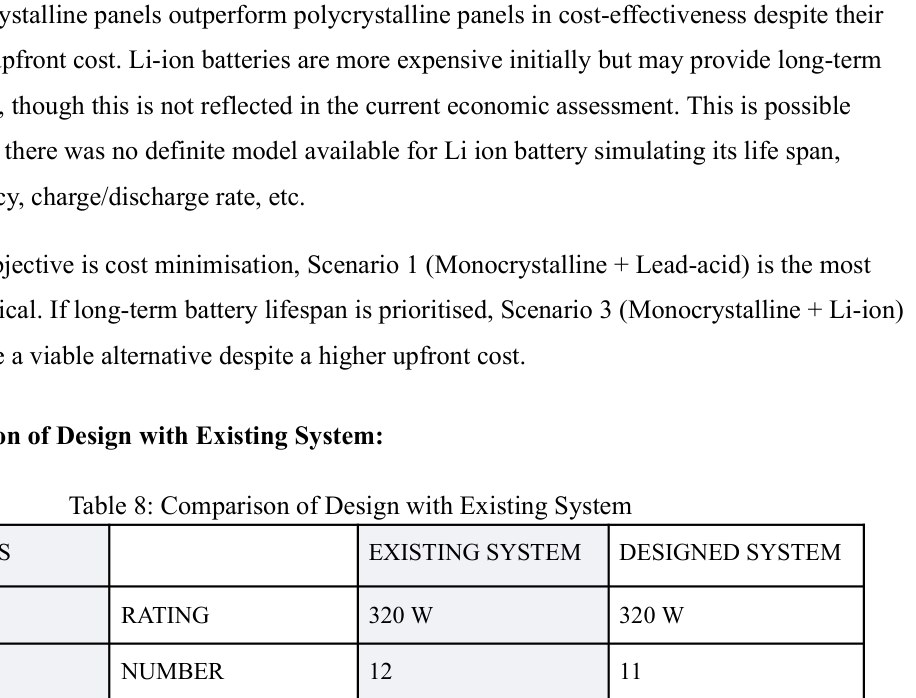
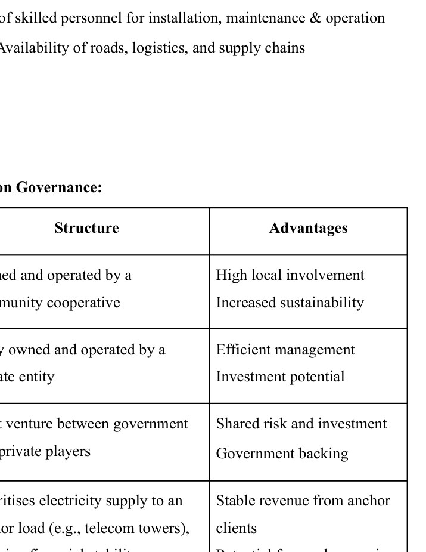

Overview
This project evaluated an operating solar mini-grid serving 13 households in Kahandolpohi village. Three years of inverter data were processed into a representative minute-resolution demand profile, then used for analytical redesign and HOMER comparison.
Technical redesign
The analytical one-day-autonomy design converged closely to the installed system: 3.52 kW calculated versus 3.84 kW existing, with a 3.45 kVA calculated inverter versus 3.5 kVA installed.

HOMER scenarios
Four PV-battery combinations were compared. The report identifies monocrystalline PV with lead-acid storage as the lowest-LCOE tested case at about ₹24.08/kWh under its cost assumptions.
Beyond electrical sizing
A field-observed battery failure left the community without service for months, revealing that maintenance financing and local technical capacity are part of the engineering problem. The report therefore compares community, private, PPP, anchor-customer and hybrid governance models and recommends a hybrid approach.

The submitted contribution declaration records equal 25% contribution for each of the four team members across the project.
Original source
The project narrative above is condensed from the submitted coursework/thesis and keeps design estimates, simulation results and demonstrated hardware distinct.